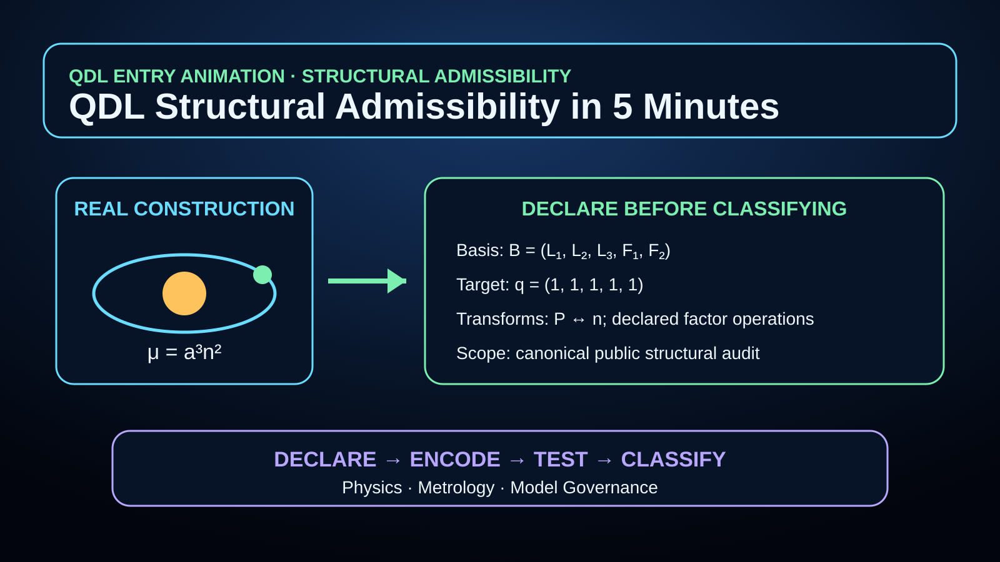

1 Start here · entry level
QDL Structural Admissibility in 5 Minutes
Begin with the method: declare the basis, target, allowed transforms, and scope; convert a real construction into a ledger vector; then compare admissible and non-admissible examples.